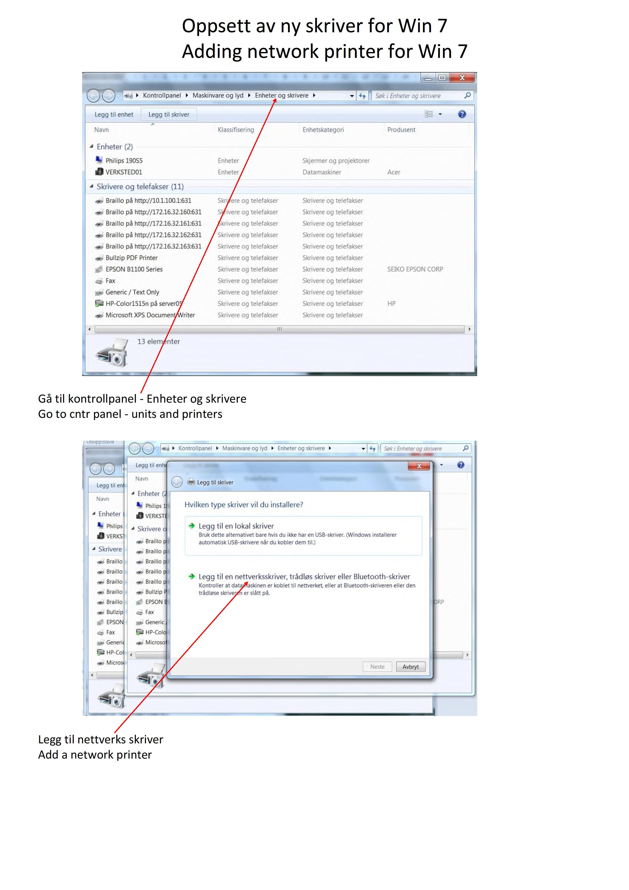
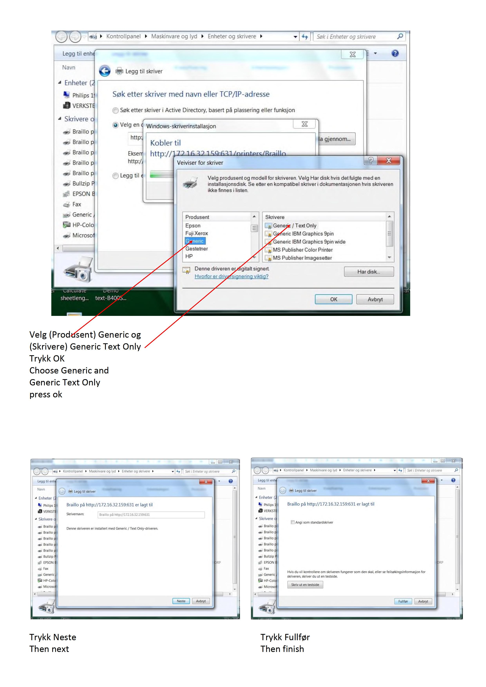
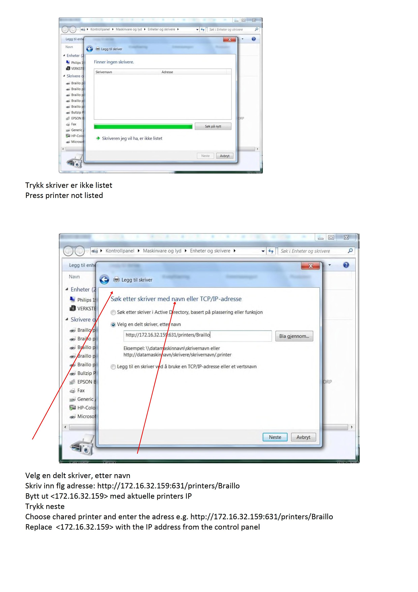

Brajični pisač Braillo 300: Inovacija u tehnologiji za slijepe osobe
Braillo 300 je napredni brajični pisač, dizajniran za ispis materijala na brajici, namijenjen osobama oštećenog vida. Ovaj je pisač prepoznatljiv po svojoj izdržljivosti, brzini i preciznosti, što ga čini jednim od vodećih uređaja u industriji. U suvremenom svijetu, gdje je pristup informacijama ključan, Braillo 300 omogućuje slijepim osobama lakše i brže sudjelovanje u obrazovnim, poslovnim i svakodnevnim aktivnostima.
Jedna od ključnih prednosti Braillo 300 pisača jest njegova brzina. Sposoban je proizvesti do 300 stranica u satu, čime omogućuje masovnu proizvodnju materijala. Ovo je izuzetno važno za škole, knjižnice i druge institucije koje trebaju brzo i učinkovito osigurati pristup obrazovnim resursima za slijepe i slabovidne osobe.
Kvaliteta je ispisa na Braillo 300 pisaču na izuzetno visokoj razini. Stranice su jasne i precizne, omogućujući korisnicima lako čitanje brajičnih znakova. Također, ovaj pisač podržava obostrani ispis (dupleks), što smanjuje troškove papira i čini ga ekološki prihvatljivijim rješenjem.
Jedna je od velikih prednosti Braillo 300 njegova dugovječnost. Izgrađen je od robusnih materijala, što ga čini izdržljivim i pouzdanim u dugotrajnom korištenju. Ova je izdržljivost posebno korisna u okruženjima s velikim opterećenjem, gdje se svakodnevno ispisuje velik broj stranica.
U konačnici, Braillo 300 predstavlja značajan iskorak u tehnologiji za slijepe osobe. Njegove karakteristike - brzina, kvaliteta ispisa, dugotrajnost i podrška za obostrani ispis - čine ga idealnim izborom za institucije i pojedince koji žele osigurati materijale na brajici najveće kvalitete.
Galerija slika

Na slici su prikazane upute za dodavanje mrežnog pisača u sustavu Windows 7. Gornji dio slike prikazuje prozor "Uređaji i pisači" u kojem su navedeni različiti pisači i uređaji. Upute ispod slike kažu: "Gå til kontrollpanel - Enheter og skrivere" što znači "Idite na upravljačku ploču - Uređaji i pisači".
Donji dio slike prikazuje prozor s opcijama za dodavanje pisača. Upute ispod slike kažu: "Legg til nettverks skriver" što znači "Dodajte mrežni pisač". U prozoru je označena opcija "Legg til en nettverksskriver, trådløs skriver eller Bluetooth-skriver", što znači "Dodajte mrežni pisač, bežični pisač ili Bluetooth pisač".

Na slici su prikazana dva prozora na ekranu računala sa sustavom Windows.
Prvi prozor prikazuje dijalog "Dodaj pisač" s porukom "Pronalaženje pisača" i tekstom "Pisač koji želim nije naveden". Ispod toga je gumb "Pritisnite pisač nije naveden" (na norveškom: "Trykk skriver er ikke listet").
Drugi prozor prikazuje opcije za pretraživanje pisača prema imenu ili TCP/IP adresi. U polju za unos je upisana adresa "http://172.16.32.159:631/printers/Braillo". Ispod toga su upute na norveškom i engleskom jeziku koje objašnjavaju kako odabrati dijeljeni pisač i unijeti adresu, te zamijeniti IP adresu s aktualnom IP adresom pisača.

Na slici su prikazani koraci za dodavanje pisača na Windows računalu.
Prvi korak prikazuje prozor "Dodaj pisač" gdje se traži odabir proizvođača i modela pisača. U ovom slučaju, odabran je proizvođač "Generic" i model "Generic / Text Only". Nakon toga, potrebno je pritisnuti "OK".
Drugi korak prikazuje prozor u kojem se potvrđuje dodavanje pisača s IP adresom 172.16.32.159631. Potrebno je pritisnuti "Next" (Dalje).
Treći korak prikazuje završni prozor gdje se potvrđuje da je pisač dodan. Potrebno je pritisnuti "Finish" (Završi).